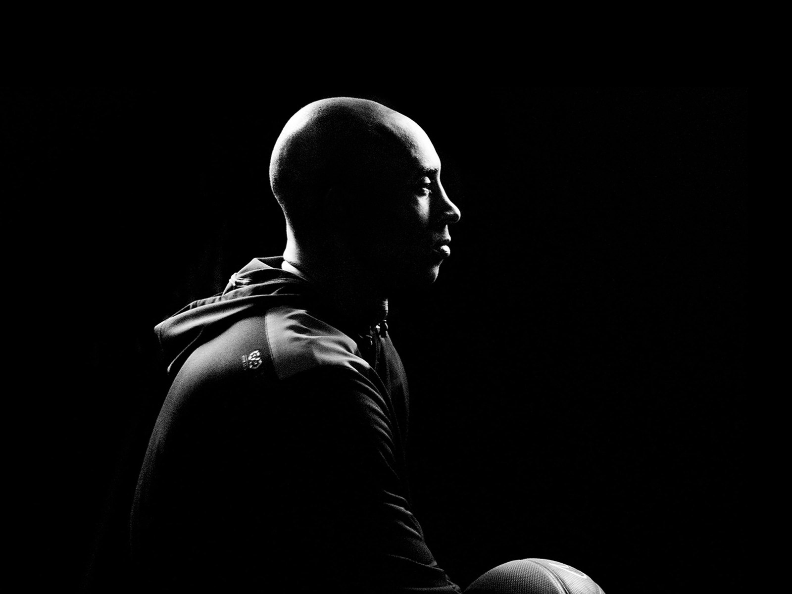

REMEMBERING
KOBE
Paying homage to The Legendary Black Mamba. Kobe Bryant was not only one of the greatest basketball players of all time, he was also a loving dad & a caring husband.
Paying homage to The Legendary Black Mamba. Kobe Bryant was not only one of the greatest basketball players of all time, he was also a loving dad & a caring husband.
Bryant, 17, is selected by the Charlotte Hornets as the 13th pick in the first round of the NBA draft. The Hornets agree to trade his draft rights to the Lakers in exchange for center Vlade Divac.
He is named All-Star Game MVP for the first time. He also won the honor in 2007, 2009 and 2011.
Bryant wins a gold medal at the Beijing Olympics as a member of the U.S. men’s basketball team.
Bryant breaks a bone in his left knee in a game against the Memphis Grizzlies and will be out for six weeks.
He scores 60 points in his final game, helping the Lakers defeat the Utah Jazz 101-96.
Kobe, 41, is among nine people who die in a helicopter crash in Calabasas. One of his daughters, 13-year-old Gianna “Gigi” Bryant, was among those to perish in the crash as well.

There's nothing that Kobe Bryant can't do. He will defend your best player. He will shoot from the perimeter. He will get all in yo mug. He will do whatever it takes. He is the most complete basketball player. In the game today-bar none
-Stephen A. Smith
A Gallery in remembrance of the relationship Kobe Bryant shared
with his daughters.
Girls are the best! Just be grateful that you've been given that gift
because girls are amazing. I would have five more girls if I could.
I'm a girl dad!
- Kobe Bryant


Tales and Stories of inspiration from Kobe's Journey
Kobe made a difference every time he took the court. He led by example,
he wanted everybody to know that he was willing to go the extra mile to
win it all. That's why he and his Mamba mentality will live on forever. That's
why he became the greatest Laker ever. That's why he'll always be an
inspiration for all of us. Rest in peace, Kobe
- Corey Maggette, Former NBA Player
Rob had worked with some of the other members of the USA basketball team before, but this would be his
first interaction with Kobe. It was so powerful, that he shared it with the world on Reddit so everyone could
get a glimpse into Kobe Bryant's insane work ethic.
Here is his story:
In his first meeting with Kobe, Rob Lalked about what he specialized in, where Kobe would like to be by the end
of summer, and about the hustle of his teammates Rob then gave Kobe his number and told him to call him any
time he wanted to do some extra conditioning work.
Two days later, Kobe wake wo Rab with a call at 4:15am in the morning.
Hey, uhh Rob, I hope I'm not disturbing anything right?"
Uhh no, what's up Kobe."
"Just wondering if you could just help me out with some conditioning work, that's all."
"Yeah sure, I'll see you in the facility in a bit."
20 minutes later, Rob arrived at the training facility. There he saw Kobe-alone and drenched in so much sweat it
looked like he'd just come from a pool. it was not even 5am yet!
The two of them worked on conditioning for about 75 minutes, then did about 45 minutes of weight training.
Then at 7am, Rob went back to his hotel to get some quick rest before the day's practice. Meanwhile, Kobe went
back to the gym to practice his shooting.
Rob was expected back at 11am. So he slept a couple of hows, got a quick breakfast, and then headed back to
the gym exhausted and sleep deprived.
When he arrived, he saw all of the members of Team USA there Lebron was talking to Carmelo, Coach
Krzyzewski wes explaining something to Kevin Durant and, on the right side of the facility all by himself, Kobe
was shooting jumpers
Fans around the world have been paying homage to Kobe in all kinds of ways. Here we
showcase a few of those.
Everyone always wanted to talk about the comparision between he and I. I
just wanted to talk about Kobe.
- Michael Jordan

The Nashville Predators hold a moment of silence for NBA star Kobe Bryant and the 8 others who tragically lost their lives in a helicopter crash yesterday prior to an NHL game against the Toronto Maple Leafs at Bridgestone Arena on January 27, 2020 in Nashville, Tennessee.

A jersey to honor Gianna Bryant sits on the UConn bench before the USA Women’s National Team Winter Tour 2020 game between the United States and the UConn Huskies at The XL Center on January 27, 2020 in Hartford, Connecticut. Bryant and her father, former NBA player Kobe Bryant, were killed in a helicopter crash on January 26.

Trae Young #11 of the Atlanta Hawks wears a number 8 jersey to honor the passing of Kobe Bryant during a game against the Washington Wizards on January 26, 2020 at State Farm Arena in Atlanta, Georgia.

The Empire State Building is illuminated in gold and purple lights to honor the late Lakers legend for paying tribute to Kobe Bryant in New York, United States on January 28, 2020. Basketball legend Kobe Bryant, who died on Sunday in a helicopter accident along with his 13-year-old daughter and seven other people.

Kobe Bryant's former team the Los Angeles Lakers have led tributes to the NBA legend on the second anniversary of his death in a helicopter crash.
The five-time NBA champion died on January 26, 2020, aged 41 in a helicopter crash alongside his daughter Gianna and seven others, shocking the world of professional sport and sending his legions of fans into mourning.
Bryant was inducted posthumously into the Naismith Memorial Basketball Hall of Fame in May 2021.
The 18-time All-Star joined the NBA straight from high school and would go on to enjoy one of the most decorated careers in the history of the sport, claiming NBA Finals MVP honours twice and earning the adoration of fans for his larger-than-life persona.